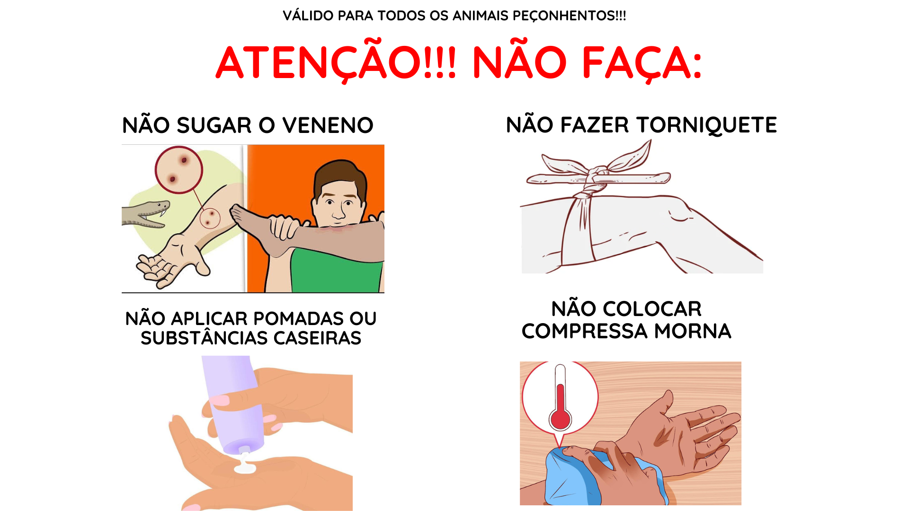
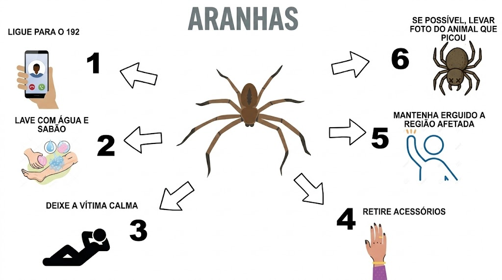
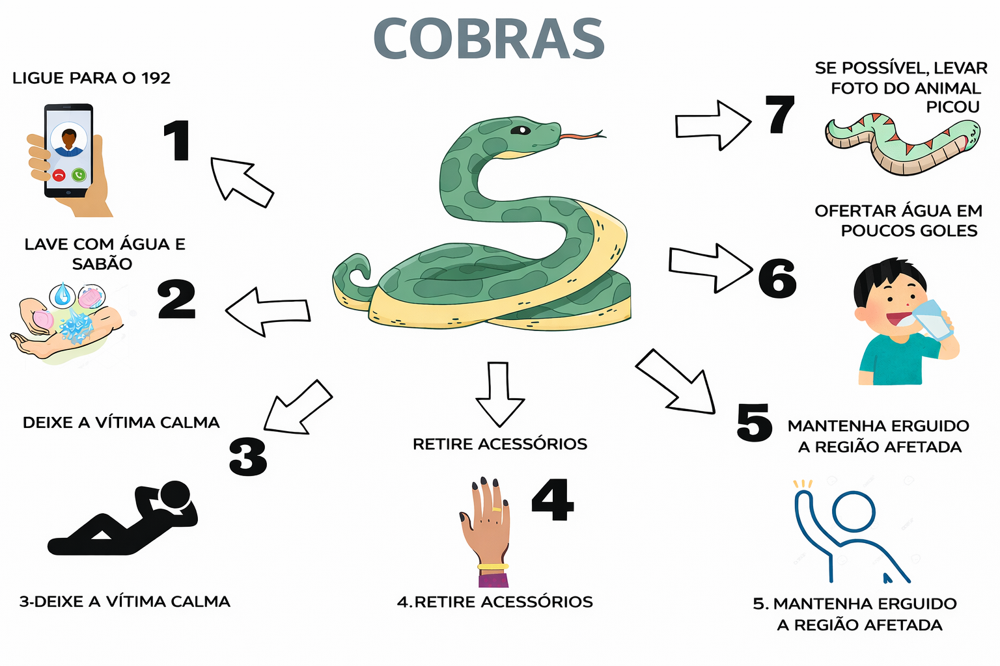
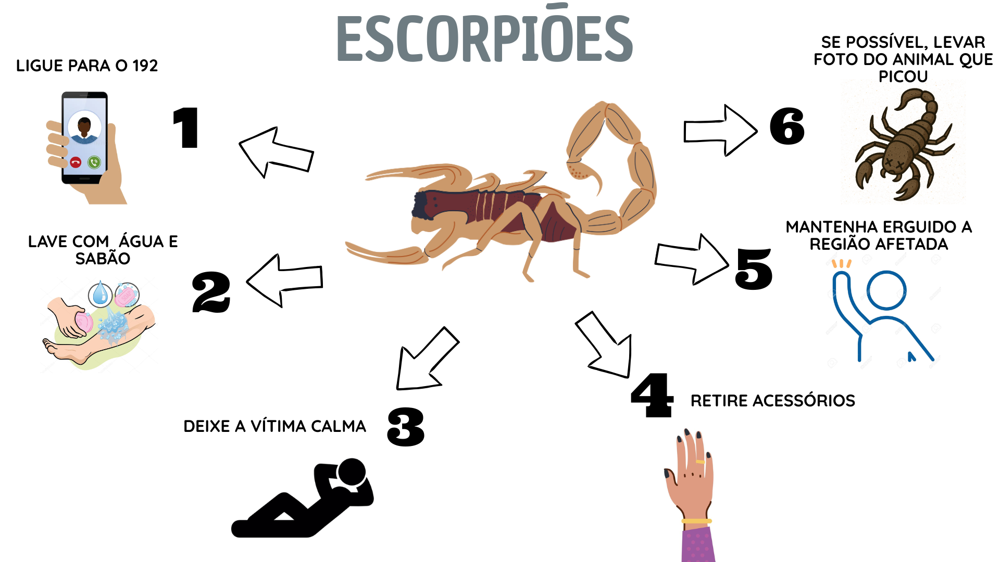

Identifique com segurança e siga as instruções abaixo.




Afaste a vítima do animal e mantenha-a em repouso. Evite esforços e mantenha o membro afetado imóvel. Não faça cortes, torniquetes ou tente sugar o veneno. Lave apenas com água corrente se não houver risco adicional.
Procure atendimento médico imediatamente — leve, se possível, uma foto do animal para ajudar na identificação.